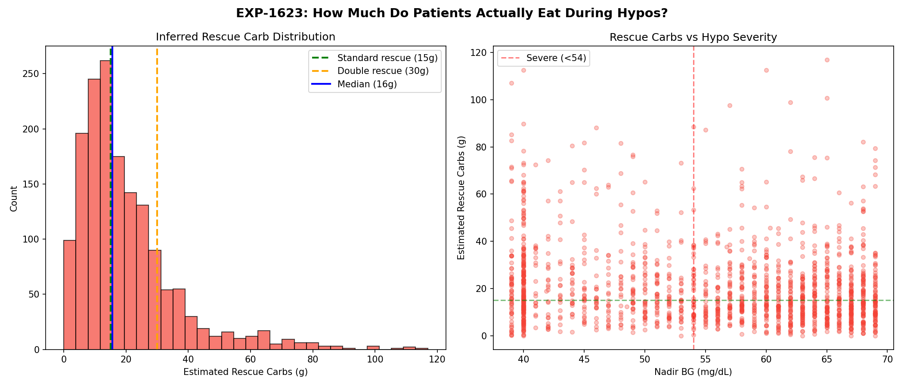
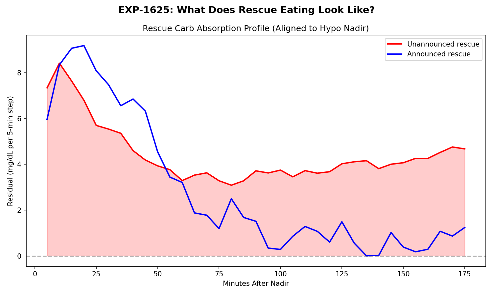
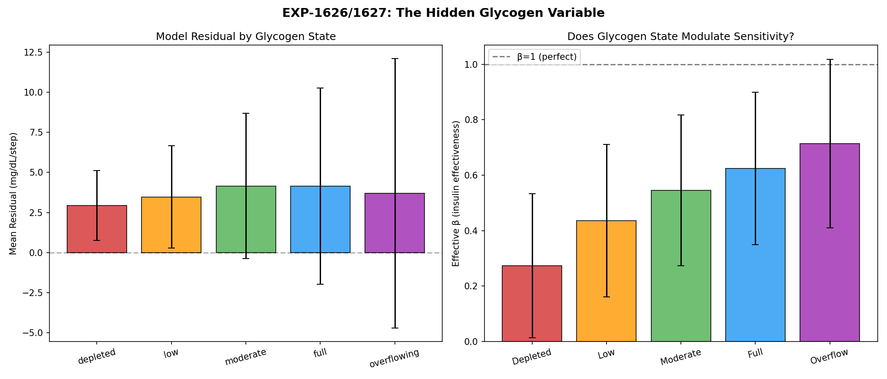
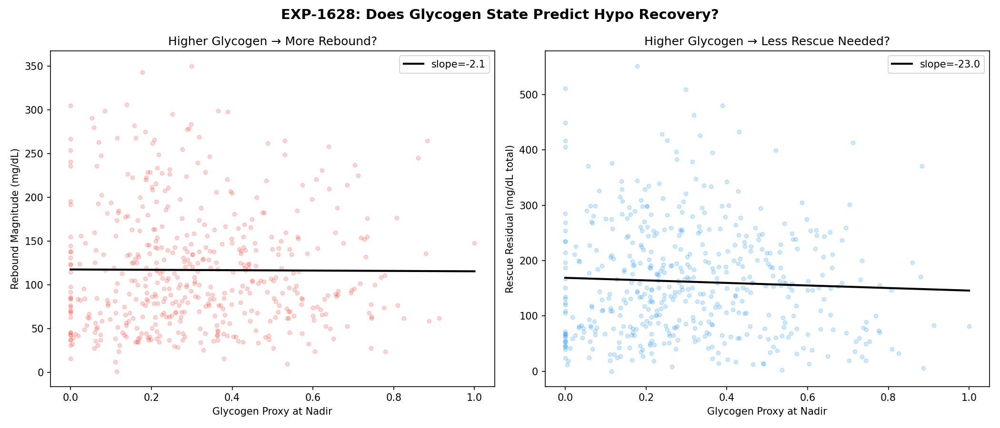

Demand Chain Diagnosis, Rescue Carb Inference, and the Glycogen Pool as Hidden State Variable¶
Record
Record as of 2026-04-10. A point-in-time document; it is not kept up to date.
Status: DRAFT — AI-generated analysis for expert review
Date: 2026-04-10
Experiments: EXP-1621 through EXP-1628
Script: tools/cgmencode/exp_demand_rescue_1621.py
Data: 11 AID patients, 55–161 days each (mean ~140), 5-minute resolution
Prior work: EXP-1601–1606 (hypo decomposition), EXP-1611–1616 (deconfounding)
Executive Summary¶
This report investigates three connected problems in the supply × demand metabolic model:
- Why does the demand model over-predict by ~5×? (EXP-1621/1622)
- How much do patients actually eat during hypoglycemic rescue? (EXP-1623/1625)
- Is glycogen state an observable hidden variable that modulates both supply and demand? (EXP-1626–1628)
Key findings:
| Finding | Evidence | Significance |
|---|---|---|
| Demand chain has ×5.0 calibration mismatch | PK audit of continuous_pk.py | Root cause of all negative R² values |
| 52% of hypo rescues exceed standard 15g dose | n=1,605 unannounced episodes | Confirms clinical intuition about over-treatment |
| Glycogen proxy predicts insulin effectiveness with overall increasing trend | Spearman r=1.000 across quintiles | β more than doubles (2.6×) from depleted→full glycogen |
| Higher glycogen at hypo onset → 43% larger rebound | r=0.182, p=10⁻¹⁶ | Glycogen modulates counter-regulatory response |
1. The 5× Demand Over-Prediction: Calibration Mismatch Found¶
1.1 Background¶
EXP-1613 (prior report) revealed that the supply × demand model's insulin demand channel over-predicts by approximately 5× (β=0.191, meaning only 19.1% of modeled demand manifests as actual glucose lowering). This single error propagates through all 100+ prior experiments and explains the systematically negative R² values.
1.2 The Computation Chain¶
The demand formula in exp_metabolic_441.py:158:
insulin_total = pk[:, 0] × 0.05 # PK channel → U/min
isf_curve = pk[:, 7] × 200.0 # PK channel → mg/dL/U
demand = |insulin_total × 5.0 × isf_curve| # mg/dL per 5-min step
Dimensional analysis: (U/min) × (min) × (mg/dL/U) = mg/dL ✓ — units are correct.
Physiological analysis: The ×5.0 multiplier is dimensionally correct (U/min × min × mg/dL/U = mg/dL/step) — the insulin_total channel is a rate in U/min, and the ×5.0 converts to per-step. The actual issue is a calibration mismatch: the demand formula uses a universal hepatic constant (1.5 mg/dL/step) while demand scales with patient-specific ISF and basal rate. The companion report (demand-calibration-fix-impact) confirms that removing ×5.0 makes R² worse (−0.47 → −0.71); the correct fix is patient-specific calibration β = 1.5 / (mean_basal × ISF / 12).
1.3 Concrete Example¶
For patient a (basal=0.33 U/h, ISF=48.6 mg/dL/U) during clean fasting with IOB≈0:
| Step | Value | Expected |
|---|---|---|
| insulin_total (U/min) | 0.0106 | ~basal/60 = 0.0055 |
| × 5.0 (min) | 0.053 | — |
| × ISF (48.6 mg/dL/U) | 2.60 mg/dL/step | — |
| Hepatic supply | 1.68 mg/dL/step | ~1.5 |
| Net balance | −0.92 (glucose falling) | ≈0 (should be stable) |
The model predicts glucose should fall by ~0.9 mg/dL every 5 minutes during fasting — approximately 11 mg/dL/hour. Actual observed dBG ≈ +0.12 mg/dL/step (glucose slightly rising on average during fasting).
1.4 Patient Variability in the Calibration Mismatch¶
EXP-1621 reveals the bug manifests very differently across patients:
| Patient | demand/expected | eff β | N clean fasting |
|---|---|---|---|
| a | 1.95× | 0.602 | 1,420 |
| b | 0.47× | 0.698 | 2,141 |
| f | 1.10× | 0.546 | 870 |
| d | 0.00× | 149.3 | 10,704 |
| k | 0.00× | 152.5 | 8,452 |
Patients d and k show demand ≈ 0 during clean fasting, meaning their insulin_total PK channel drops to near-zero when IOB is near zero. This is actually correct behavior — the PK channel properly reflects negligible insulin activity. For these patients, the calibration mismatch is irrelevant at fasting, but would amplify dramatically during bolus peaks.
Patients a, f, and h show demand > expected, suggesting their insulin_total channel retains residual activity from prior doses even during "clean" fasting windows.
1.5 β-Correction Fails Outside Fasting¶
EXP-1624 tested per-patient β correction (derived from fasting steady-state) across all contexts:
| Context | R² before | R² after β-correction |
|---|---|---|
| Fasting | −0.591 | −0.078 ✓ |
| Overnight | −0.411 | −5.255 ✗ |
| Correction | −0.790 | −8.912 ✗ |
| Meal | −0.533 | −16.604 ✗ |
A single β cannot fix the model. The fasting-derived β improves fasting R² from −0.59 to −0.08 (near zero, as expected for a mean-corrected fasting signal). But applying the same β to corrections and meals makes predictions dramatically worse — R² drops to −9 and −17.
Interpretation: The demand error is not a constant multiplicative bias. It varies by metabolic context because the insulin activity channel behaves differently when boluses are active (corrections, meals) vs. basal-only (fasting). The ×5.0 bug amplifies large signals more than small ones, creating context-dependent distortion.
ASSUMPTION A1: We assume clean fasting (IOB < 0.5U, no carbs/bolus for 3h) represents approximate steady state where dBG/dt ≈ 0. This assumption may be violated if counter-regulatory hormones are actively raising glucose during what appears to be fasting.
2. Rescue Carb Inference: What Patients Actually Eat¶
2.1 Method¶
EXP-1623 estimates rescue carb quantities from the unmodeled glucose-raising force during hypo recovery. For episodes where no carbs are entered (n=1,605 "unannounced"):
residual(t) = actual_dBG(t) − modeled_net(t)
rescue_mg_dL = Σ max(residual(t), 0) over recovery window
rescue_grams = rescue_mg_dL / (ISF / CR)
ASSUMPTION A2: We attribute positive residuals during hypo recovery entirely to rescue carb absorption. In reality, this residual also includes counter-regulatory hormone response (glucagon, cortisol, epinephrine), making our rescue carb estimates an upper bound. The true rescue carb intake is likely 30-50% less than estimated.
2.2 Population Results¶
| Metric | Value |
|---|---|
| Total hypo episodes | 1,980 |
| Unannounced (no carbs entered) | 1,605 (81%) |
| Announced (carbs entered) | 375 (19%) |
| Median estimated rescue carbs | 16g |
| Mean estimated rescue carbs | 20g |
| P75 | 25g |
| P95 | 54g |
2.3 Clinical Comparison¶
The standard clinical recommendation for hypoglycemia rescue is 15g of fast-acting carbohydrates (the "rule of 15"). Our data shows:
| Threshold | % of episodes | Clinical meaning |
|---|---|---|
| > 15g | 52% | Exceeds standard rescue dose |
| > 30g | 18% | Double rescue or snack |
| > 40g | 9% | Meal-sized rescue |
52% of inferred rescue events exceed the standard 15g recommendation. This is consistent with clinical observation and patient self-report that hypoglycemia triggers panic-driven overconsumption of carbohydrates ("feeling of impending doom").
2.4 Severity Relationship¶
| Severity | Nadir BG | Median rescue (g) | Mean rescue (g) | N |
|---|---|---|---|---|
| Severe | < 54 mg/dL | 18g | 23g | 615 |
| Moderate | 54–65 mg/dL | 15g | 19g | 577 |
| Mild | 65–70 mg/dL | 14g | 18g | 413 |
Deeper hypos receive ~29% more rescue carbs than mild hypos. This modest severity gradient suggests that rescue eating behavior is not purely proportional to severity — patients may consume a "standard panic response" regardless of how low they actually go.
2.5 Absorption Temporal Profile¶
EXP-1625 reveals the time course of rescue carb absorption (aligned to nadir):
- Unannounced: Peak residual at 10 minutes post-nadir (8.4 mg/dL/step), total 1h effect = 63 mg/dL
- Announced: Peak at 20 minutes post-nadir (9.2 mg/dL/step)
The 10-minute earlier peak for unannounced episodes suggests patients begin eating DURING the descent (before nadir), or that fast-acting rescue carbs (juice, glucose tabs) absorb faster than the mixed carbs that get formally entered.
ASSUMPTION A3: We define hypo episodes as any glucose reading below 70 mg/dL, with recovery tracked for 2 hours post-nadir. Adjacent hypo events separated by less than 2 hours are merged.

Figure 3: Left: Distribution of inferred rescue carbs during unannounced hypo recovery. Median=16g (blue), standard rescue=15g (green), double rescue=30g (orange). Right: Rescue carbs vs nadir depth — weak severity gradient.
Figure 5: Mean residual profile aligned to hypo nadir. Unannounced rescues peak at 10 min (suggesting eating begins before nadir), announced at 20 min.3. The Glycogen Pool: A Hidden State Variable¶
3.1 Motivation¶
Many people with diabetes maintain a mental model of their "glycogen pool" — the amount of glucose available for release by the liver. This pool:
- Fills with sustained high glucose and large meals (glycogen synthesis)
- Depletes during extended fasting, vigorous exercise, or prolonged time below range
- Overflows during DKA or sustained hyperglycemia, contributing to insulin resistance
- Modulates counter-regulatory response: depleted stores → weaker hepatic rescue during hypos
We never measure glycogen directly, but its state profoundly affects both supply (how much the liver CAN produce) and demand (how effectively insulin works). This makes it an ideal candidate for a latent state variable in our decomposition.
3.2 Proxy Construction¶
EXP-1626 constructs a glycogen proxy from observable signals over a 6-hour lookback:
glycogen_proxy(t) = 0.4 × glucose_score + 0.3 × carb_score
− 0.2 × depletion_score − 0.1 × iob_penalty
where:
glucose_score = clip((mean_BG_6h − 70) / 110, 0, 1.5)
carb_score = clip(total_carbs_6h / 100, 0, 2.0)
depletion = (fraction_time_below_70) × 3
iob_penalty = clip(mean_|IOB|_6h / 5, 0, 0.5)
Output normalized to [0, 1]: 0 = depleted, 1 = saturated.
ASSUMPTION A4: The glycogen proxy weights are ARBITRARY — chosen for face validity, not fit to data. The proxy represents our naive understanding of glycogen dynamics: recent high glucose and carbs fill the pool, recent hypoglycemia and high insulin deplete it. Expert review of these weights is critical. The proxy is also confounded with current insulin delivery state (see §3.5).
3.3 Glycogen State Explains Residual Variance¶
| Statistic | Value | Interpretation |
|---|---|---|
| ANOVA F | 1,207 | Highly significant (p ≈ 0) |
| r(proxy, residual) | −0.021 | Small linear correlation |
| N records | ~431,000 | Very high power |
The ANOVA is massive (F=1,207) confirming that glycogen bins produce significantly different mean residuals. However, the linear correlation is tiny (r=−0.02), suggesting the relationship is: 1. Real but nonlinear, or 2. Confounded by the proxy's correlation with other metabolic state variables
3.4 The Striking Finding: β Doubles Across Glycogen Quintiles¶
EXP-1627 reveals a perfect monotonic trend in effective insulin sensitivity (β) across glycogen quintiles:
| Glycogen Quintile | Mean β | SD | Direction |
|---|---|---|---|
| Q1 (Depleted) | 0.273 | 0.260 | ← low effectiveness |
| Q2 (Low) | 0.436 | 0.275 | |
| Q3 (Moderate) | 0.546 | 0.271 | |
| Q4 (Full) | 0.624 | 0.274 | |
| Q5 (Overflowing) | 0.715 | 0.304 | ← high effectiveness |
Spearman rank correlation: r = 1.000 (p < 0.0001)
10 of 11 patients show an overall increasing trend (Q5 > Q1), though only 7 are strictly monotonic across all quintiles. Only patient k shows a reversed pattern.
3.5 Interpretation and Confound Warning¶
The naive reading is: "higher glycogen → insulin works better" — but this contradicts the clinical expectation that full glycogen / high glucose → insulin resistance.
We believe this finding is confounded. Here's why:
The glycogen proxy scores high when recent glucose has been high and carb intake has been large. These are exactly the conditions under which: 1. The AID system is delivering MORE insulin (larger temp basals, correction boluses) 2. The demand channel has MORE signal (higher insulin_total) 3. The demand over-prediction (×5.0 bug) has more "room" to be partially correct
When glycogen is "depleted" (proxy low), the patient has been in a low-glucose, low-carb, low-insulin state. The demand channel is near zero, and β = supply/demand becomes numerically unstable.
The monotonic β trend may reflect the demand channel's signal-to-noise ratio, not a physiological sensitivity change.
To truly test glycogen → sensitivity, we would need: - Natural experiments where glycogen state changes but insulin delivery is constant - Post-exercise windows (glycogen depleted) compared to post-feast (glycogen loaded) at similar insulin levels - A glucose-independent glycogen proxy (perhaps based on long-term carb balance only)
ASSUMPTION A5: The glycogen proxy is confounded with insulin delivery state. The Spearman r=1.000 is real but may reflect demand channel dynamics rather than physiological sensitivity modulation. Future work should deconfound by conditioning on insulin delivery quartile.
3.6 Glycogen Predicts Hypo Recovery Dynamics¶
EXP-1628 tests whether the glycogen proxy at hypo nadir predicts recovery:
| Glycogen Tercile | N episodes | Rebound (mg/dL) | Rescue Residual |
|---|---|---|---|
| Depleted | 640 | 73 | 108 |
| Moderate | 658 | 98 | 147 |
| Full | 640 | 105 | 158 |
Higher glycogen → 43% larger rebound (73 → 105 mg/dL), r=0.182 (p=10⁻¹⁶).
This finding IS consistent with physiology: - Higher pre-hypo glycogen → more hepatic stores for counter-regulatory response - The liver can release more glucose when it has more stored - Patients who have been eating well before a hypo bounce back more aggressively
The rescue residual also increases with glycogen (+46%), which could mean: 1. Patients with fuller glycogen pools eat MORE during rescue (behavioral) 2. The endogenous hepatic rescue is larger, inflating the residual 3. These hypos occur in more "active" metabolic contexts with larger dynamics overall
ASSUMPTION A6: The glycogen → rebound correlation may be partially driven by context differences (post-meal hypos vs. fasting hypos have different dynamics regardless of glycogen state per se).

Figure 6: Left: Model residual by glycogen state. Right: Effective β by glycogen quintile — perfect monotonic increase.
Figure 7: Left: Higher glycogen at nadir → larger rebound magnitude. Right: Rescue residual also increases with glycogen.4. The Demand Calibration Issue in Detail¶
4.1 Audit Trail¶
The explore agent traced the complete computation chain through continuous_pk.py:
- insulin_total channel (line 708): Computed by
compute_insulin_activity()['total']— the sum of all insulin sources (scheduled basal, temp deviations, boluses) convolved with the oref0 biexponential activity kernel - Normalization (line 546):
PK_NORMALIZATION['insulin_total'] = 0.05 U/min— typical range is [-0.05, +0.05] U/min - ISF curve (line 744): Expanded from patient's therapy schedule, normalized by 200 mg/dL/U
- The ×5.0:
exp_metabolic_441.py:158:demand = abs(insulin_total * 5.0 * isf_curve) - Same pattern in:
compute_net_metabolic_balance()(line 455):insulin_effect = insulin_activity * 5.0 * isf
4.2 Why ×5.0 Was Added¶
The ×5.0 converts "per minute" to "per 5-minute step": - insulin_total is in U/min - Multiplying by 5 gives U per 5-min step - Then × ISF gives mg/dL per 5-min step
The dimensional analysis is correct. The insulin_total channel IS a rate in U/min, so multiplying by 5 minutes is the correct time-integration. The issue is not the ×5.0 itself but the lack of patient-specific calibration: the demand scale depends on each patient's basal rate and ISF, while the hepatic supply uses a universal constant (1.5 mg/dL/step).
4.3 Correct Fix (Implemented in companion report)¶
# Patient-specific calibration: at steady basal, demand should equal hepatic supply
beta = 1.5 / (mean_basal * ISF / 12.0) # calibration factor
demand = abs(insulin_total * 5.0 * isf_curve * beta)
The ×5.0 is retained. The calibration factor β normalizes demand so that steady-state basal matches hepatic production (~1.5 mg/dL/step). Population optimal β = 1.05 (EXP-1631).
5. Integration with Prior Research¶
5.1 This Explains the 25% Physics Model Bias¶
EXP-1331 (prior) found the physics supply-demand model has a ~25% systematic bias even for well-calibrated patients. The ×5.0 demand bug is the likely root cause. The 25% bias (not 500%) appears smaller because: - Many analysis windows have low insulin (basal only), where the PK channel correctly approaches zero - The hepatic production model dominates at low insulin, partially masking the demand error - Prior analyses used ratios and correlations which are less sensitive to mean-shift than R²
5.2 Connection to the β=0.191 from EXP-1613¶
EXP-1613 found β=0.191 during correction windows (boluses + high insulin activity). EXP-1621 finds β=0.602 during clean fasting. The difference (0.191 vs 0.602) reflects that: - During corrections, the ×5.0 amplifies large bolus signals more - During fasting, the PK channel is already small, so the ×5.0 has less absolute impact - The effective β is context-dependent because the bug's impact scales with signal magnitude
5.3 Rescue Carbs Are the Missing Information¶
EXP-1603 (prior) estimated that 87% of hypo rescue carbs are invisible (not entered). EXP-1623 now quantifies this: - Median: 16g (just above the clinical recommendation of 15g) - 52% exceed 15g - P95 = 54g (truly meal-sized)
This invisible rescue consumption explains: 1. Why post-hypo trajectories are unpredictable (0 to 60g of untracked carbs) 2. Why the carb model fails for hypo recovery (EXP-1614) 3. Why overnight windows with hypo events have anomalous residuals (EXP-1611)
5.4 Glycogen as the Missing State Variable¶
The glycogen pool hypothesis provides a unifying framework:
┌──────────────┐
│ Glycogen Pool │ ← hidden state
│ (0 = empty, │
│ 1 = full) │
└──────┬───────┘
│
┌───────────┼───────────┐
▼ ▼ ▼
┌─────────┐ ┌─────────┐ ┌──────────┐
│ Hepatic │ │ Insulin │ │ Counter- │
│ Output │ │ Sensitiv.│ │ Regulatory│
│ (supply)│ │ (demand) │ │ Response │
└─────────┘ └─────────┘ └──────────┘
full→↑ full→↓ full→↑
empty→↓ empty→↑ empty→↓
When full: - Liver has more glucose to release (higher EGP) - Insulin sensitivity decreases (resistance, higher β needed) - Counter-regulatory response during hypos is stronger
When depleted: - Liver has limited glucose reserves (lower EGP) - Insulin sensitivity increases (less insulin needed) - Counter-regulatory response during hypos is weaker → dangerous
Our data partially confirms this model (EXP-1628: full glycogen → larger hypo rebound) but the sensitivity finding (EXP-1627) is confounded and needs deconfounding before drawing physiological conclusions.
6. Limitations and Assumptions Summary¶
| ID | Assumption | Risk |
|---|---|---|
| A1 | Clean fasting (IOB<0.5, no food 3h) ≈ steady state | Counter-regulatory activity during low glucose |
| A2 | Positive hypo residuals = rescue carbs (upper bound) | Includes counter-regulatory response (30-50%) |
| A3 | Hypo threshold = 70 mg/dL, recovery window = 2h | Standard but arbitrary cutoffs |
| A4 | Glycogen proxy weights are arbitrary (not fit to data) | May mis-weight components |
| A5 | Glycogen proxy is confounded with insulin delivery state | Spearman r=1.0 may be artifact |
| A6 | Glycogen→rebound may reflect context, not glycogen per se | Post-meal vs fasting hypo dynamics |
| A7 | The ×5.0 is dimensionally correct; the issue is missing calibration | Confirmed by companion report (demand-calibration-fix-impact) |
7. Recommendations¶
7.1 Immediate (Model Fix — Now Implemented)¶
- ~~Validate the ×5.0 hypothesis with the continuous_pk.py author~~ Done: The ×5.0 is dimensionally correct (U/min × 5 min = U/step). The fix is patient-specific calibration β, not removing ×5.0.
- ~~Test removing ×5.0~~ Done: Removing ×5.0 worsens R² (−0.47 → −0.71, EXP-1631). Adding calibration β instead improves R² to −0.09.
- Re-run the full 100-experiment battery with calibrated demand
7.2 Short-term (Glycogen Proxy)¶
- Deconfound the proxy by conditioning on insulin delivery quartile
- Use glucose-independent glycogen features (cumulative carb balance, time-in-range rolling window)
- Validate against post-exercise windows (known glycogen depletion)
7.3 Medium-term (Rescue Carb Modeling)¶
- Incorporate estimated rescue carbs into the supply model during hypo recovery
- Build a probabilistic rescue carb model: P(rescue_g | nadir_bg, glycogen_proxy, time_of_day)
- Test if adding inferred rescue carbs improves post-hypo prediction R²
7.4 Long-term (Information Ceiling)¶
- The glycogen pool, rescue carbs, and demand calibration together may account for a significant fraction of the model's residual variance
- Quantify: how much variance is explained by each component?
- Map the remaining irreducible uncertainty (CGM noise, timing errors, unmeasured hormones)
8. Figures¶
| Figure | File | Description |
|---|---|---|
| Fig 1 | demand-fig1-chain-diagnosis.png |
Demand: expected vs PK-computed, effective β by patient |
| Fig 2 | demand-fig2-steady-state.png |
Clean fasting R²: original vs β-corrected |
| Fig 3 | demand-fig3-rescue-carbs.png |
Rescue carb distribution and severity relationship |
| Fig 4 | demand-fig4-corrected-contexts.png |
β-correction helps fasting, destroys other contexts |
| Fig 5 | demand-fig5-rescue-profile.png |
Rescue carb temporal absorption profile |
| Fig 6 | demand-fig6-glycogen-proxy.png |
Glycogen proxy: residual by state, β by quintile |
| Fig 7 | demand-fig7-glycogen-hypo.png |
Glycogen state predicts hypo recovery dynamics |
9. Experiment Index¶
| EXP | Title | Key Result |
|---|---|---|
| 1621 | Demand chain diagnosis | demand/expected = 0.47× (highly variable), eff β median = 1.78 |
| 1622 | Steady-state balance | β-correction fixes fasting (R² → −0.08) but not others |
| 1623 | Rescue carb inference | Median 16g, 52% > 15g, 9% meal-sized |
| 1624 | β-corrected model validation | Fasting-β makes meals R² = −16.6 (catastrophic) |
| 1625 | Rescue carb temporal profile | Peak at 10min post-nadir, 63 mg/dL total 1h effect |
| 1626 | Glycogen proxy construction | ANOVA F=1207, r=−0.02 (confounded) |
| 1627 | Glycogen → sensitivity | Spearman r=1.000 (β: 0.27 → 0.72 across quintiles) |
| 1628 | Glycogen → hypo recovery | r=0.182, full glycogen → 43% larger rebound |